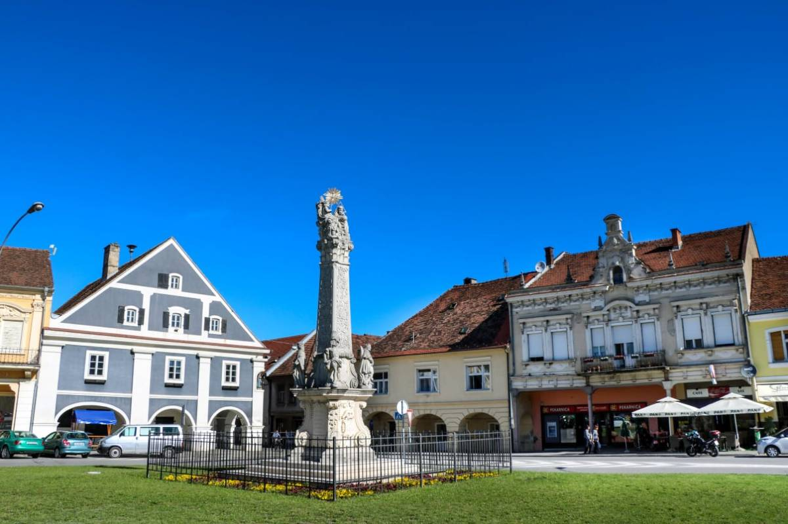

<!DOCTYPE html>
<html>
    <title>
    Požega
    </title>

</html>
<head>
<body style="background-color: aquamarine">
    <h1 style="text-align:center">
        Požega
    </h1>
    <hr>
    
    <br>
    <hr>
    <a href="http://pozega-tz.hr/"> 
        Explore Požega 
    </a>
    <p>
    <i>
        Požega is a city in western Slavonia, eastern Croatia, with a total population of 22,364.It is the administrative
        center of the Požega-Slavonia County.
    </i>
    <h2>
        Name
    </h2>
    <p>
        Between 1921 and 1991, the town was known as Slavonska Požega.[3] In German, the town is known as Poschegg, in
        Hungarian as Pozsega, in Turkish as Pojega, and in Latin as Incerum (-i, n.) and Possega. There is a town in Serbia
        with same name (see: Požega, Serbia). <i>Požega</i> is supposed to be related to the Croatian word <i>"požar"</i>, meaning
        <i>"forest fire"</i>. <i>"Incerum"</i> is supposed to come from <sub>Proto-Indo-European words</sub> <b>h1eyn</b> (valley) and <b>kjer</b> (heart), so
        that it means <i>"the heart of the valley"</i>.
    </p>
    <h2>
        Geography
    </h2>
    <p>
    <b>Požega</b> (area: 133,9 km <sup>2</sup>) is located in the south-western part of the Valley of Požega, or Požega basin, in
    Croatian: Požeška kotlina. This fertile valley has been important since the antiquity - its Roman name was Vallis
    Aurea, meaning <strong>"golden valley"</strong>.
    <br>
    <em>The valley is formed by the Slavonian mountains of <mark>Požeška Gora, Psunj, Papuk, Krndija and Dilj</mark>.
    Two state roads run concurrently through the city: the D38 Pakrac — Požega — Pleternica — Đakovo and the D51 Nova
    Gradiška — Požega — Našice, as well as a railroad: Nova Kapela/Batrina — Pleternica — Požega — Velika.</em>
    </p>
</body>
</head>